|
Click on the pictures to see them in larger size. All of these pictures where shot in south Sweden (Skåne) 2002-02 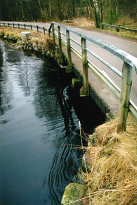The water is just able to pass under the road. A few centimeters more, and no more road. 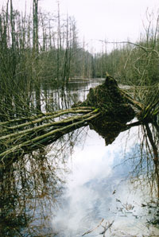 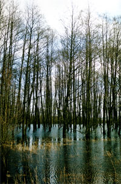 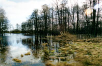 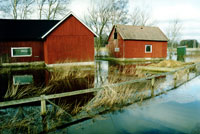No need to water the lawn, nor to mow the lawn either. 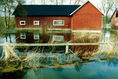 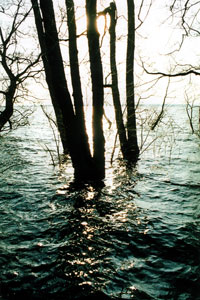Looks like an ocean, but it is really just a small lake. 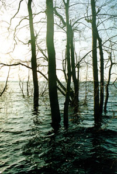 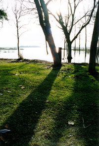 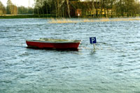Parking for boats. It was usually for cars... 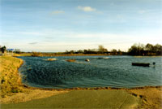... but as you see the road just ends here.  "Helge
Å" (River Helge) is almost Lake Helge now. "Helge
Å" (River Helge) is almost Lake Helge now.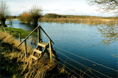 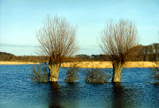 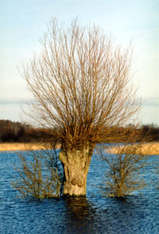 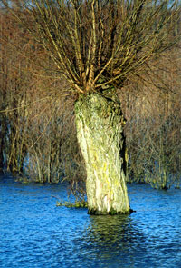 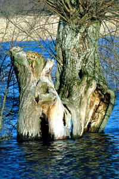 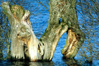
|